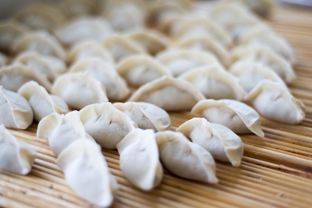
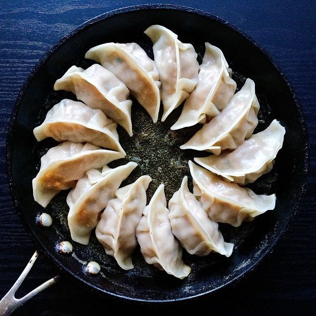

COMO HACER Y COCINAR GYOZAS
Las gyoza son unas empanadillas que pueden llevar relleno de carne o de verduras, nosotros prepararemos la versión más tradicional con carne de cerdo.
La masa para gyozas se puede comprar ya lista en obleas en tiendas de productos asiáticos
Receta
Ingredientes para hacer unas 50 gyozas
ingredientes
- 1 paquete de obleas de gyoza
- 400 g de carne picada de cerdo
- 150 g de col china
- 2 cebolletas
- 2 setas shiitake
- 1 cucharada de jengibre fresco rallado
- 1 diente de ajo picado fino
- 1 cucharada de salsa de soja
- Aceite de sésamo
- Aceite vegetal para freír
- Sal y pimienta
Cómo hacer gyozas
- Para que la col no quede demasiado dura, la cocinamos durante 1 minuto en el microondas a máx. potencia. Luego la picamos junto con las cebolletas y las setas.
- En un cuenco, agregamos la carne picada, las verduras que acabamos de trocear, el jengibre y el ajo y mezclamos bien con las manos.
- Añadimos un chorrito de aceite de sésamo, sal y pimienta y volvemos a mezclar bien.
- Vamos cogiendo las obleas en una mano, humedecemos el borde con un poco de agua, ponemos una cucharada de relleno en el centro, doblamos por la mitad y unimos los bordes comenzando de un extremo, como si estuviéramos frunciendo el borde sobre sí mismo.
- Entenderéis mejor en este vídeo la forma de rellenar y cerrar las gyoza:
Cocción de las gyozas
- Una vez que tenemos todas las empanadillas hechas, calentamos bien una sartén grande con un chorrito de aceite vegetal. Cuando está caliente, ponemos a freír los gyoza por la parte plana.
- Añadimos agua en la sartén, tiene que quedar el fondo cubierto pero no cubrir las empanadillas, y tapamos inmediatamente.
- Dejamos que se cocinen al vapor unos 5 minutos, hasta que se evapore casi toda el agua.
- Destapamos, añadimos un chorrito de aceite de sésamo, cocinamos tapado 1 minuto más y ya se podrá servir.